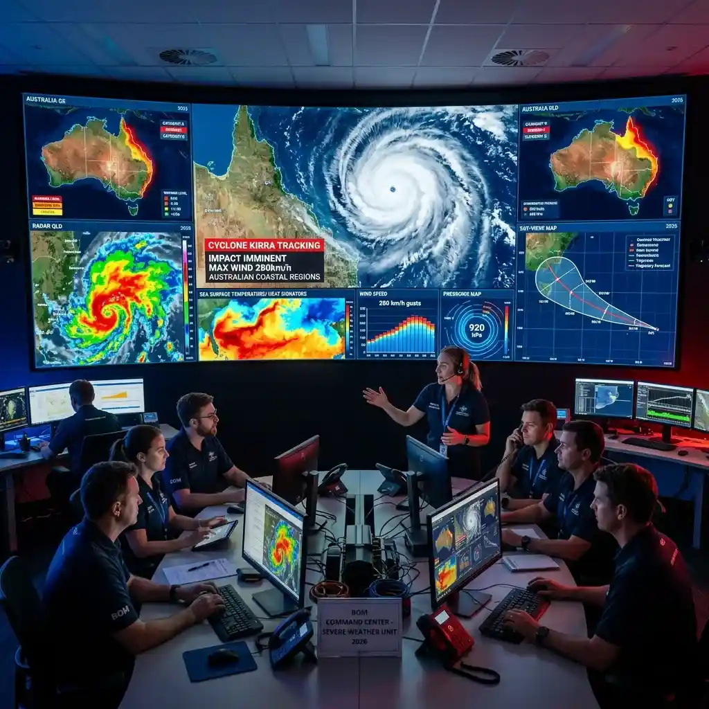

Tracking Cyclone Narelle in Real-Time: A Multi-Stream Emergency Workflow

Cyclone Narelle has rapidly intensified into a Category 4 storm in the Indian Ocean, posing a significant threat to the Western Australian coast as of March 19, 2026.
In the high-stakes environment of a major weather event, static reports and hourly news bulletins are no longer sufficient to ensure safety. The speed at which a cyclone's path, intensity, and impact can change requires a real-time, multi-dimensional intelligence approach. For emergency responders, local residents, and infrastructure managers, the ability to monitor diverse information streams simultaneously can be the difference between a successful evacuation and a disaster. YoutubeMulti offers the perfect toolkit to build a "Personal Emergency Workspace," providing a total-situational-awareness view of Cyclone Narelle's movements.
The Meteorological Breakdown: Understanding Narelle’s Core Dynamics
As of the morning of March 19, 2026, the Bureau of Meteorology (BOM) reported that Cyclone Narelle's wind speeds have reached 225 km/h, with a central pressure of 935 hPa. The storm is currently moving south-southeast at a steady rate, with its "eye" becoming increasingly defined on high-resolution satellite imagery. Understanding the dynamics of such a powerful system involves analyzing not just the wind speeds, but also the sea-surface temperatures, atmospheric pressure gradients, and the potential for a "storm surge" in low-lying coastal areas.
Using YoutubeMulti, you can create a dedicated "Meteorological Surveillance Grid." Dedicate the primary tile to the BOM’s official live dashboard, showing the latest projected path and warning zones. In the side tiles, you can monitor live satellite-loop feeds from Himawari-9, real-time wave-height data from off-shore buoys, and independent "weather-nerd" analysis channels that are breaking down the specific atmospheric conditions helping (or hindering) the storm's intensification. This "verification" of data allows you to spot shifts in the storm's trajectory before they even appear in the official 3-hourly updates. Total multitasking efficiency is the key to proactive emergency management.
Emergency Response: State-of-the-Art Surveillance and Evacuation Protocols
The Western Australian Department of Fire and Emergency Services (DFES) has already issued several Red Alerts for coastal communities, including Port Hedland and Karratha. The evacuation protocols are clear, but the logistical challenge of moving thousands of people and securing critical infrastructure is immense. Monitoring the live press conferences from DFES officials alongside the real-time "traffic-management" data is essential for anyone currently in the warning zones.
YoutubeMulti allows you to build an "Evacuation Workspace." Tile 1 for the live DFES official briefings. Tile 2 for a live traffic-camera dashboard showing the status of major evacuation routes like the Great Northern Highway. Tile 3 for a live social media feed (like the #CycloneNarelle tag on X or local Facebook emergency groups) to see the authentic "ground-level" reports of flooding or power outages. Tile 4 for a live radio feed from ABC Perth/Pilbara for continuous audio updates. This "360-degree" view provides a level of emergency intelligence that helps you make informed decisions about when to move and when to "bunker down." The era of passive observation is over; the era of active emergency monitoring is here.
Infrastructure Hazards: Protecting Energy Hubs and Coastal Communities
One of the primary concerns with Cyclone Narelle is the potential impact on Western Australia's critical energy infrastructure. The Pilbara region is home to some of the world's largest iron-ore ports and LNG processing facilities. These "economic engines" of the country are particularly vulnerable to high wind speeds and storm surges. Monitoring the "live-status" reports from these facilities alongside the latest maritime weather warnings is key for anyone involved in regional logistics or the national economy.
A multi-stream setup is particularly useful here. Use one tile to monitor the official Port Hedland authority newsletters, another for live news feeds from the Pilbara's primary energy producers, and a third for independent drone-cam or CCTV feeds (where available) showing the current sea levels. This "asset-protection" dashboard ensures that you have a comprehensive understanding of the situation's impact on local industry before you even hear the official reports. For any business owner or employee in the region, this information is vital for post-storm recovery planning. This is institutional-grade infrastructure monitoring, now available to the individual enthusiast or professional.
Emergency Monitoring with YoutubeMulti: The Ultimate Disaster Grid
A Category 4 cyclone is a high-information, high-volatility event. Between the official PDF warning maps, the 30-minute briefings, and the thousands of conflicting social media reports, there is too much noise for a single screen. YoutubeMulti allows you to build a professional-grade "Disaster Management Ops Center" for personal or professional use.
Setting Up Your Personal Emergency Workspace
- Tile 1: BOM Path Map: A high-definition, live-updating map showing the latest cyclone track and warning colors.
- Tile 2: Live Local News: A feed from a Western Australian news portal (like 7 News Perth or ABC News) for the baseline narrative.
- Tile 3: Social Listening Pulse: A live feed from X (formerly Twitter) or Reddit, tracking the most recent posts from local emergency services and residents.
- Tile 4: Weather Analytics: A YouTube channel or live-board dedicated to real-time analysis of radar imagery and sea-surface temperatures.
- Tile 5: Official DFES Feed: Monitor the latest alerts and community safety advice directly from the emergency services department.
Looking Ahead: The Role of Climate Resilience and Post-Storm Recovery
As Cyclone Narelle makes landfall and eventually weakens, the focus will shift toward the "recovery phase." This includes the assessment of structural damage, the restoration of power and water services, and the long-term discussion about climate resilience in coastal communities. Most analysts believe that the second half of 2026 will see a significant increase in investment toward "cyclone-proofing" the Pilbara’s critical hubs. Staying informed throughout the recovery period of April and May 2026 will be a matter of constant, multi-screen awareness.
To stay ahead of the "Resilience" narrative, building a dedicated "Recovery-Watch Grid" is the best approach. Tracking the weekly reconstruction project announcements alongside the long-term climate-impact projections from various research institutions allows you to spot the early signs of a successful (or struggling) recovery effort. The era of the "active disaster monitor" has arrived, and it's powered by multi-dimensional intelligence. Whether you are a local resident or a concerned citizen, having efficient multitasking is your greatest asset today.
Conclusion: The Necessity of Multi-Stream Emergency Monitoring
The March 2026 events surrounding Cyclone Narelle are a stark reminder of the power of nature and the complexity of modern disaster management. It is no longer enough to just react to a storm; you must monitor it as it happens. By utilizing advanced tools like YoutubeMulti, you can ensure that you are always at the forefront of the safety and intelligence curve. Don't just wait for the next update—monitor the maps, analyze the briefings, and experience the truth behind the weather headlines in real-time. The era of efficient multitasking is here.